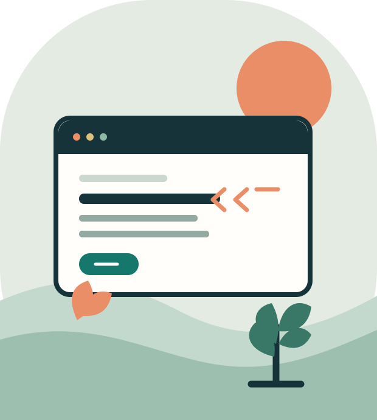

Web design · Academic project
Hospital Services Website
A website concept for presenting hospital services in a clear, approachable way. The project highlights page structure, navigation, and responsive styling.
BSc CSIT student · IT
I’m an IT student building a strong foundation in web development, databases, and the tools that help ideas become practical projects.

01 — About
I’m pursuing a Bachelor of Science in Computer Science and Information Technology (BSc CSIT), with a growing interest in creating clear, accessible web experiences.
My coursework gives me opportunities to explore front-end development and database concepts. I use small academic projects to practice turning requirements into organized pages, readable code, and useful information.
Currently building: practical skills in HTML, CSS, JavaScript, SQL, and collaborative version control.
02 — Toolkit
A growing toolkit for building, organizing, and sharing ideas.
Semantic page structure
Layouts and responsive styling
Programming fundamentals
Core programming concepts
Relational data and queries
Version control and sharing
03 — Selected work
Academic projects that connect coursework with practical problem-solving.
Web design · Academic project
A website concept for presenting hospital services in a clear, approachable way. The project highlights page structure, navigation, and responsive styling.
Database design · Academic project
A database project exploring how library records can be organized and related. It connects table design with practical SQL queries.
04 — Get in touch
I’m always glad to connect around student projects, technology, and new ideas.
Add your email Update this link with your preferred contact address.